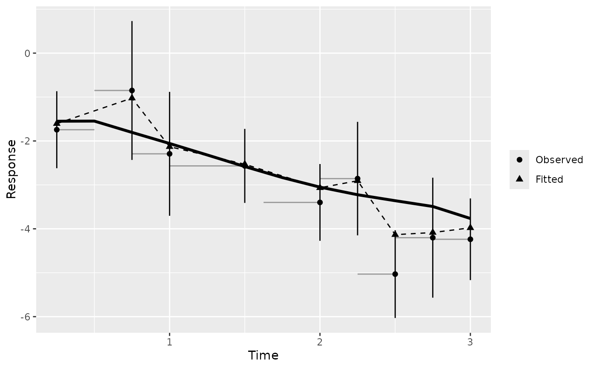

Plot a gg_boost_calibration object
Source: R/plot.gg_boost_calibration.R
autoplot.gg_boost_calibration.RdObserved against fitted over follow-up: bin means of the observed values with their intervals, the fitted bin means beside them, and the cohort mean curve when the object carries one.
Usage
# S3 method for class 'gg_boost_calibration'
autoplot(object, ci = TRUE, ...)
# S3 method for class 'gg_boost_calibration'
plot(x, ci = TRUE, ...)Arguments
- object
A
gg_boost_calibrationobject.- ci
Logical. Draw 95\ to
TRUE; bins holding one observation have none.- ...
Not used; present for S3 consistency.
- x
A
gg_boost_calibrationobject.
Details
Each bin is drawn as a thin horizontal segment spanning its time range at the observed mean. With equal-count bins that segment is the tail-support signal: where observations are sparse, a bin has to stretch further to collect its share, so a long segment late in follow-up means a thin tail.
Observed bin means are points with vertical 95\ fitted bin means are a second point series in another shape, joined by a dashed line. Where the two agree bin by bin, the model is calibrated over that stretch of follow-up. The cohort curve, drawn as a heavier line, is the mean predicted curve across all subjects; it can depart from the bin means late in follow-up when the subjects still being measured differ from the cohort, which is a property of follow-up rather than of the model.
The returned plot carries no theme.
Examples
# \donttest{
sim <- boostmtree::simLong(n = 25, n.time = 4, model = 1)$data.list
fit <- boostmtree::boostmtree(
x = sim$features, tm = sim$time, id = sim$id, y = sim$y,
M = 50, verbose = FALSE
)
plot(gg_boost_calibration(fit, pred = predict(fit, x = fit$x)))

# }